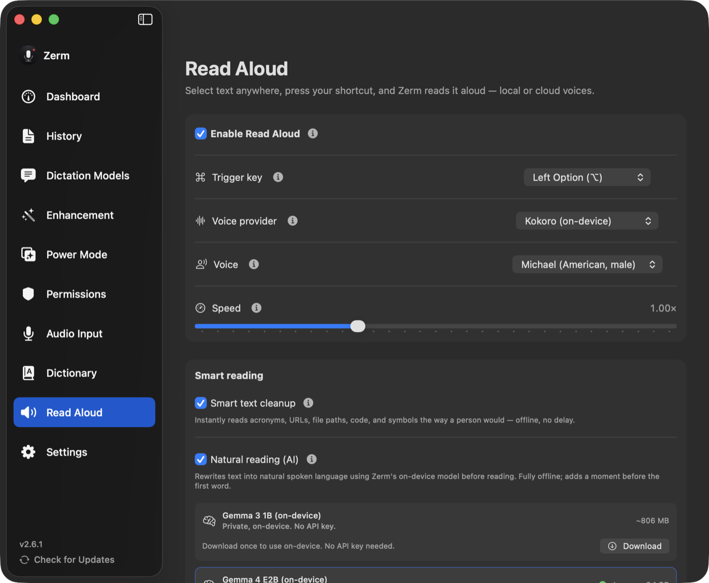

Speech
Read aloud
Select any text on your Mac and hear it back — with the markup, code and symbols cleaned up first.
Read Aloud is the other half of the app. Highlight text anywhere in macOS, press your
Read Aloud key, and Zerm speaks it. Press again to stop.

The trigger
Read Aloud gets its own hotkey, configured the same way as the dictation one: a modifier
key on its own, or a custom combination you record. It is unset until you choose one.
Reading whatever is selected needs Accessibility permission — the same permission
dictation uses to paste. See permissions.
Smart Reading
Raw text is usually not speakable text. Documentation is full of markup, code spans,
URLs, and symbols that a voice will happily read out character by character.
Smart Reading is on by default and cleans the text before it reaches the voice, offline
and instantly:
- Acronyms and units are expanded the way a person would say them.
- URLs, code blocks, and tables are summarised rather than spelled out.
- Markdown syntax and emoji are dropped.
- Section markers, symbols, and status codes are turned into words.
So See §4.2 — the POST /v1/ingest endpoint returns 202 ✅ is read as "See section four
point two — the ingest endpoint returns a two oh two accepted."
Natural Reading
A second, optional pass that sends the cleaned text through the on-device language model
to rewrite it into something that sounds like prose rather than a document being read
out. It is off by default because it needs the local model downloaded, and it adds a
moment before playback starts.
Worth turning on for reference material and specifications. Unnecessary for anything
already written to be read.
Voices
Kokoro is the bundled local voice, running on sherpa-onnx. It downloads once and
then works offline, and it is good enough to listen to a long document without fatigue.
Nine voices are available. Kokoro is English-only; Hebrew text needs an installed
Apple System Voice (or a cloud voice that supports Hebrew).
Apple System Voices use the voices already on the Mac, including Hebrew ones if
you have installed them.
Cloud voices — Deepgram, ElevenLabs, OpenAI, Gemini, Inworld, and Cartesia — are
available if you add a key. They send the text you are reading to that provider. Kokoro
sends nothing anywhere.
Retell keeps the source writing system. A Hebrew selection stays Hebrew. A mixed
Hebrew/English selection is not rewritten as all-Hebrew.
Each provider keeps its own voice selection, so switching provider and switching back
does not lose your choice.
Playback
Speed runs from 0.5× to 2×, defaulting to 1×. It applies to every provider.
Reading is interruptible: pressing the key again stops playback immediately. Starting a
dictation while Zerm is speaking is blocked rather than overlapped — one voice at a
time.
Restore clipboard puts back whatever was on your clipboard when Read Aloud is done
capturing the selection.
Statistics
Words read and sessions completed are counted for the dashboard. They are counters only
— no text is retained. See privacy and retention.